Glean Agents are a comprehensive platform feature designed for building, orchestrating, and managing AI agents within enterprises, aimed at scaling AI adoption across various business operations. They enable users to create personalized agents using natural language and offer a library of pre-built agents that can be tailored for specific tasks. Glean Agents operate using an agentic reasoning engine that supports complex workflows driven by company data and external information. This platform not only facilitates the construction of agents but also incorporates governance measures to ensure data security and compliance, making it a strategic tool for enhancing productivity and automating processes across departments.
In this lab we will:
- Explore an existing agent including learning how to extend it.
- Create a Q&A Chatbot Agent
- Build an Agent from Scratch
If you're already logged in, feel free to go directly to the next step otherwise follow the steps below to login first.
Navigate in your browser to https://app.glean.com/chat/agents which will re-direct you to the Glean login page.

Enter the email address provided for you by the Workshop Moderator. First enter the email address in the Work email field and click the Log in button.
You will be presented with a screen similar to the following. Enter the password provided by your Workshop Moderator and click the Sign in button.

Once completed, you will be redirected to the Glean Agents page.
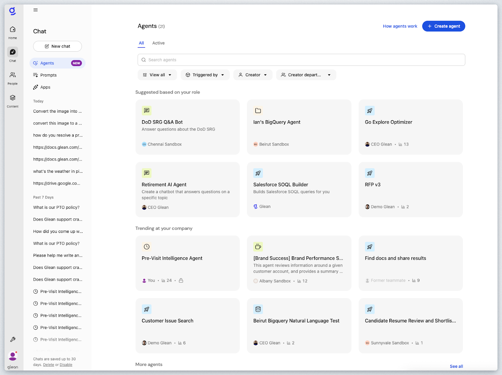
If you don't see the Glean Agents page, click on the Chat icon in the left of the screen and then select Agents
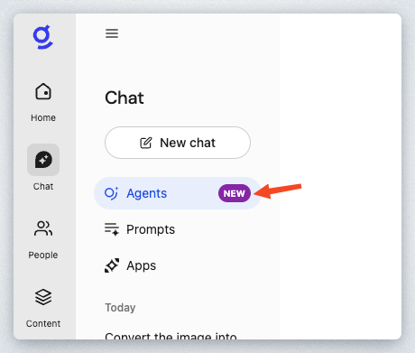
Congrats! You have successfully completed this step of the guide. The single sign-on authentication process through Okta, demonstrating Glean's seamless integration with your organization's identity management system. This streamlined login experience eliminates the need for additional credentials while ensuring secure access to enterprise resources.
Move on to the next step by clicking on Next below.
A Glean Agent is an AI-powered tool that automates tasks for you, from simple to complex workflows, by handling actions like gathering information, summarizing data, and making decisions based on previous steps.
You can set up an Agent to start working when something specific happens, and it will carry out a series of actions that adapt to changing inputs, streamlining your work and saving you time on repetitive or detailed processes.
Who are agents for?
Agents are intended for various types of users within an enterprise, including:
- Builders: Individuals who create custom AI experiences. They often fall into subgroups such as function ops, IT personnel, power users, and drive-by users who need solutions for one-off problems.
- Consumers: Users who utilize agents created by others but are unlikely to develop their own agents. These include employees across titles and functions who benefit from the predefined tasks and automation provided by agents.
- Administrators: Responsible for managing and overseeing the adoption and governance of agents within the organization.
Examples of agents you might create
When it comes to creating agents, the possibilities are almost limitless. You're free to create agents to help you solve any task however you want. Here are some examples of agents you might create:
- Sales prospect outreach: Automates researching sales prospects and generating outreach messages.
- Support ticket next steps: Summarizes ongoing support ticket activities and provides suggested next steps for resolution.
- Engineering self-evaluation: Analyzes all of a user's past activity over a given time period to generate a self-evaluation document for performance reviews.
- Pull request reviewer: Automates the review and description generation for software pull requests.
- Meeting recap: Compiles a comprehensive review of a past meeting with action items, relevant documents, and experts to consult for additional feedback.
- Customer sentiment score: Mines internal company knowledge, conversations, support tickets, and more to generate a comprehensive satisfaction score.
- Daily Digest Agent: Provides a daily summary of relevant meeting notes, updates, and tasks that need attention.
By deploying these agents, you can automate complex tasks to save time, avoid repetitive chores, and improve outcomes for your coworkers and customers.
Before we dive into building an agent, let's examine one and test it out. This private sandbox instance of Glean has various pre-populated agents. For the purposes of this workshop we will explore the Plan My Day Agent.
Click the Plan My Day Agent card under the Favorites section.
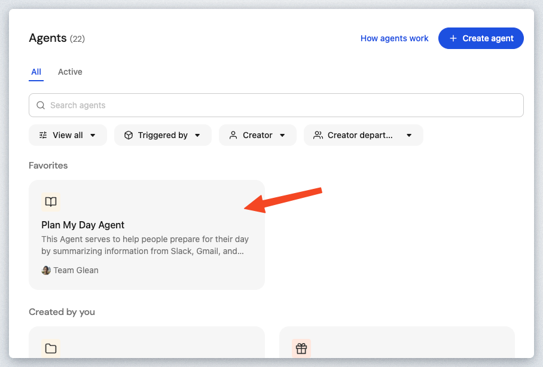
In the Popup Window select the View agent setup link to see the design of this agent.
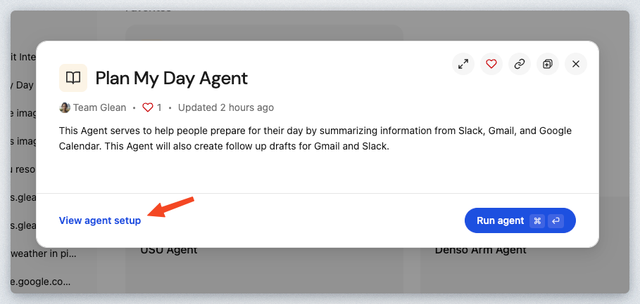
You're now in the Glean Agent Builder in viewer mode. As the note states, you can edit and make changes to the Agent but you can't save them.
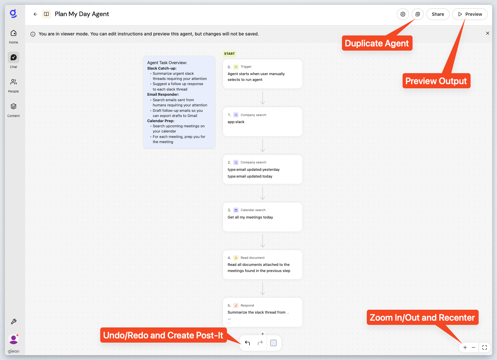
Use your mouse to navigate the Plan My Day Agent canvas. Clicking and holding down the mouse button will allow you to reposition the view. You can click on the Recenter button on the bottom right of the screen to reset the view.
Let's go ahead and walk through the different steps that make up this Agent.
Step 0 - Trigger - Input Form Trigger
This defines how to trigger the Agent. For this one, it's an Input form trigger but this Agent doesn't have any fields configured.

Step 1 - Company Search - Slack
Search Slack for all messages that mention the user running the Agent.
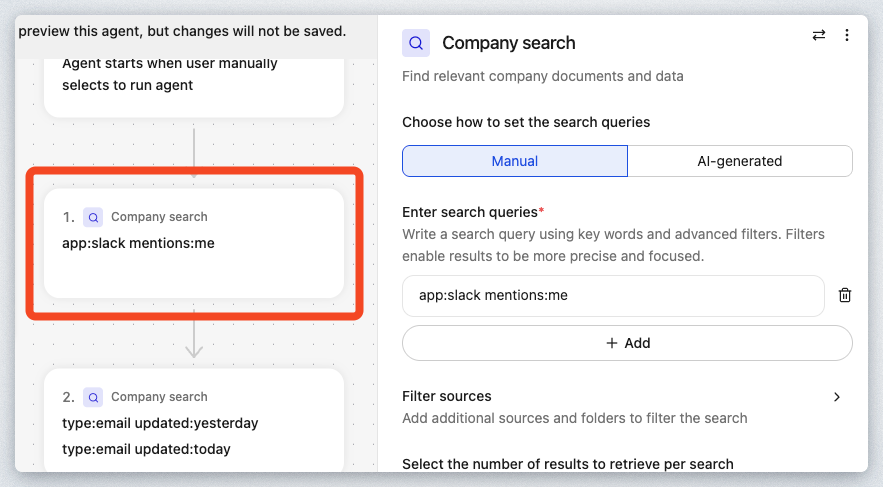
Step 2 - Company Search - Email
Perform an email search for all emails from yesterday and today. This searches across Outlook or Google Mail, depending on which one you have Glean configured to crawl and index.
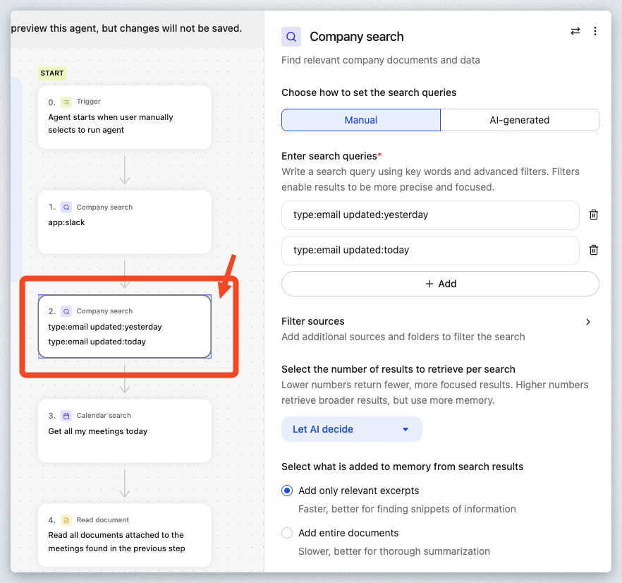
Step 3 - Calendar Search
Execute a Calendar search to find all meetings scheduled for today for the user running the Agent.
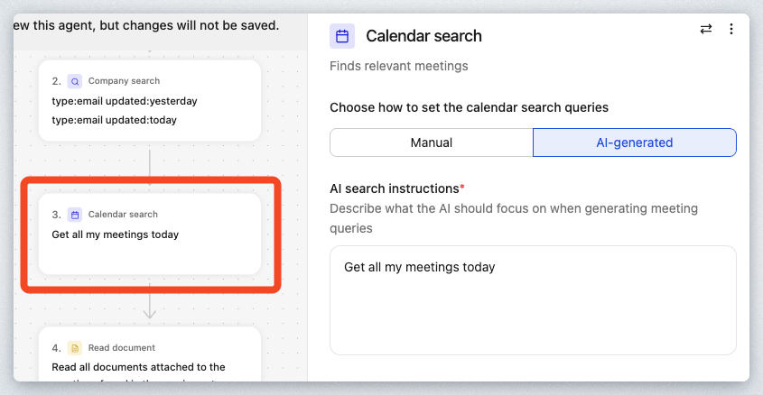
Step 4 - Read Document
Search for meeting notes from previous meetings that have a similar title
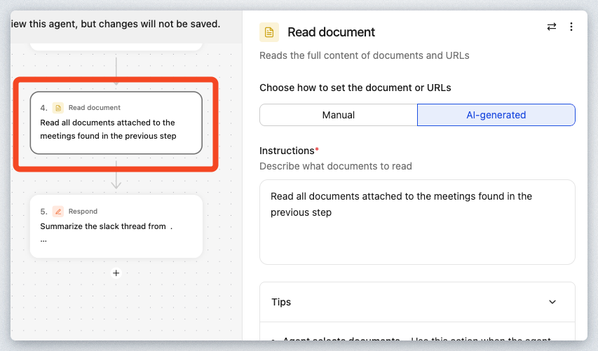
Step 5 - Respond
Respond to the user with all of the information desired in order to plan the user's day.
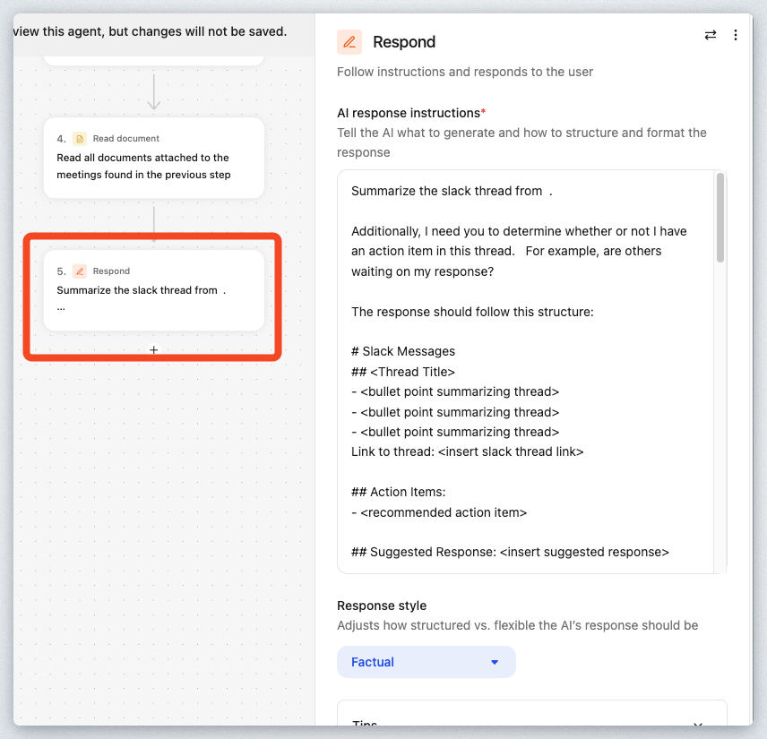
Here are the AI response instructions below.
As you can see, the author has control over the formatting of the response including adding additional instructions for the Reasoning engine to assist in the output. Note the Markdown syntax for the response formatting. While this is not required, it can be helpful since LLMs deeply understand the Markdown syntax.
Let's now execute this agent directly from the Design Canvas. Click the Preview button in the upper right corner to expand the test window on the left side of the screen as shown:
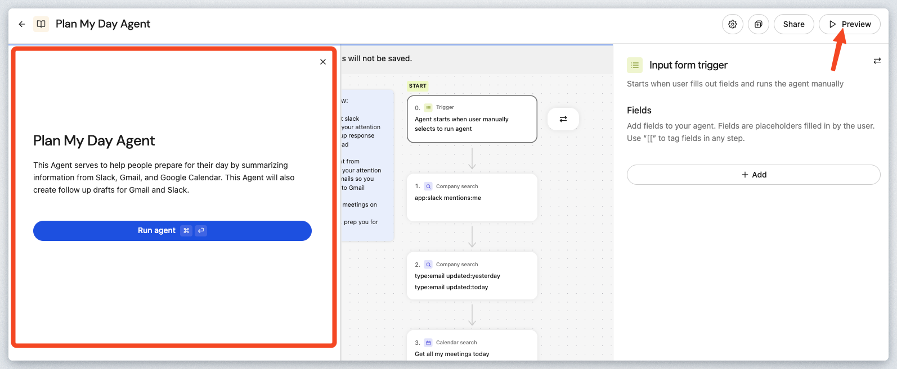
Click the Run agent button to execute the Agent.
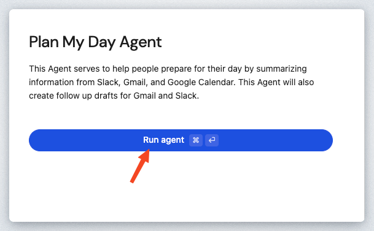
The Plan My Day Agent will start running through the defined steps. When it gets to the Respond step, you'll see the output in the preview window like the example below. This will vary from user-to-user and workshop-to-workshop.
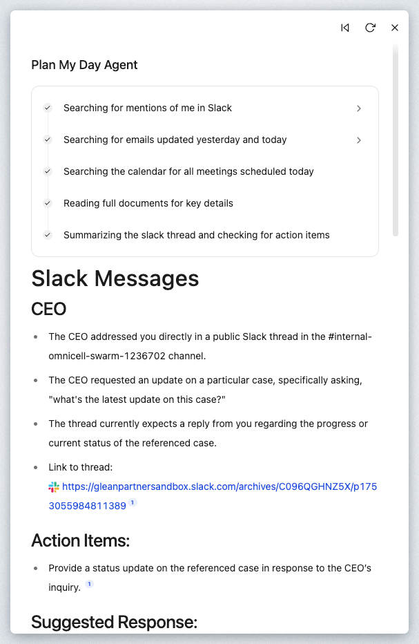
The above example could be beneficial as an Agent that runs automatically on a scheduled basis in the morning before you start your day. The message could be fed automatically to Email, or your company's messaging program (Teams, Slack, etc...)
Think about how you extend this Agent to drive additional value (e.g. Look for only unread Slack/Email messages..).
Now that you've seen an Agent in action, let's walk you through the process of building your own. Click on the arrow on the top left to return back to the Agent directory.

You can also navigate directly by going to https://app.glean.com/chat/agents, or by navigating the Glean Menu via this path: Chat > Agents.
Click on + Create agent in the upper right corner of the screen.

This will open up the Create agent popup window as shown:

Select Template
Feel free to look around at all of the Templates provided by Glean to jumpstart the build. There is also the ability to create an agent by describing the agent intent in Natural Language (Use AI to generate a draft).
For the purposes of this Agent, we will use the template called Q&A Chatbot. Click that Template Card.

This will generate a new Agent with a Canvas that looks similar to the following:

Modify the name of this Agent. Click the pencil icon in the upper left corner next to the default name to modify it as shown:

In the popup window fill out the Agent name. Replace [Your Name] with your actual name. This will allow us to differentiate all of the users in this workshop. Feel free to modify the Description if desired as well.

Step 0 - Trigger
Click the 0. Trigger Card to configure this step. We are going to add a couple of conversation starters to provide the user some sample questions to use to kickoff the conversation.
Click the + Add button under the Conversation starters.

For the Conversation starter label type in: Request PTO Balance and in the Write prompt box enter the following: How much paid time off do I have left?
Your Conversation starters prompt should look similar to the following:

Add one more conversation starter with the label: Leave Policy and the prompt of: What are our leave policy options?.

Step 1 - Branch
Select the 1. Plan and execute steps Action card to open the configuration. We are going to switch this Step to a Branch Action. Click the Switch action button on the top right.

In the Select Step search bar enter Branch and select the Branch Action as shown:

Your new view should look like the following:

In the Branch conditions section of the configuration enter the following text in the Choose this branch if... prompt window:
The configuration window should look similar to the following:

Click the Plus icon under the Fallback branch as shown:

Enter Plan in the Select step search box as shown and select the Plan and execute steps Action.

In this next step, we are going to create the Instructions and select the Knowledge Sources desired to serve HR related requests.
In the Plan and execute steps Actions, enter the following instructions in the Instructions text box.

Click the text box in the Company search section to instantiate a search for indexed content that will be used to answer the user's questions.
Type in gco and click the See all results for "gco" link at the bottom of the search.

In the Add a knowledge source popup window, hover over the (Demo) GCo. HR Policies folder and click the Add Item button as shown:

Click the X button in the upper right hand corner of the popup to close the search window.

Your Plan and execute steps Action should look similar to the following:

Now let's configure the Steps under the Branch if the user inquires about PTO. In the Design Canvas click the Plus icon under the first Branch here:

In the Select Step search box, enter workday and select the Workday: Get PTO Availability Action as shown.

This is a Custom Action registered in this Glean instance. As you can see this Action makes a real-time callout via an API to retrieve the users PTO Balance.
Enter How much paid time off do I have left? In the Instructions window of the Workday: Get PTO Availability Action configuration screen.

Now that we have received the Paid Time Off Balance for the user, we will need to respond to the user with the information.
Underneath the Workday: Get PTO Availability action, click the Plus icon to add a step.

Search for and select the Respond Action.

In the AI response instructions text box, enter:
Your Respond Action should look similar to the following:

Your new HR Q&A Chatbot is now complete! Click the Save button in the upper right hand corner.

Now it's time to test it out! Click the Preview button in the upper right hand corner to open the test harness window.

You can see that Conversations starters can be used to pre-populate the Chat window with the text specified in the configuration.

Feel free to try both conversation starters and/or ask any question of the new Agent.
If you ask about Paid Time Off or use that conversation starter, the Chatbot should call the Workday: Get PTO Availability Action. Otherwise the questions should be answered directly from the content within the (Demo) GCo. HR Policies folder.
This lab has demonstrated that AI agents are no longer just conceptual tools—they are concrete, accessible, and transformative components within modern enterprises. Through hands-on exploration, you have learned how to leverage Glean's agentic platform to automate critical workflows, integrate diverse data sources, and maintain rigorous governance and security standards. By dissecting pre-built solutions like the Plan My Day Agent and building custom tools such as a HR Q&A Chatbot, you have gained practical experience with branching logic, external integrations (e.g., Workday), and the flexible orchestration of complex tasks.
This experience highlighted three core takeaways:
- Glean Agents make it possible for users—regardless of coding expertise—to build powerful, personalized automations for virtually any business function.
- The platform's agentic reasoning engine excels at handling multi-step, context-aware processes, surfacing actionable insights and saving time across departments.
- Security, compliance, and data integrity are built-in, making these automations reliable for enterprise adoption.
As organizations continue to seek efficiency, scalability, and innovation, Glean Agents lay a robust foundation for ongoing automation and strategic transformation.